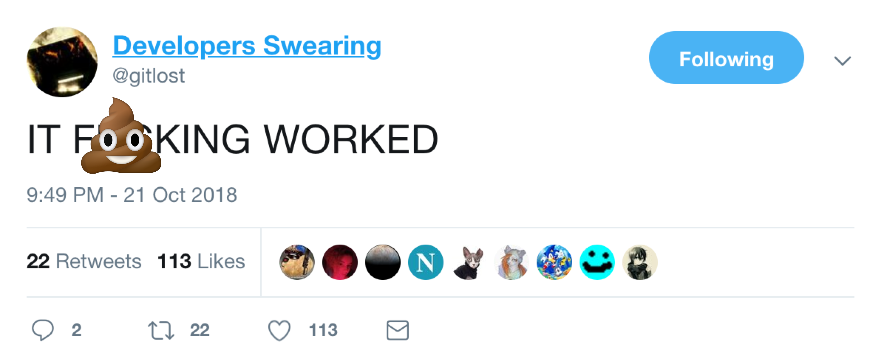
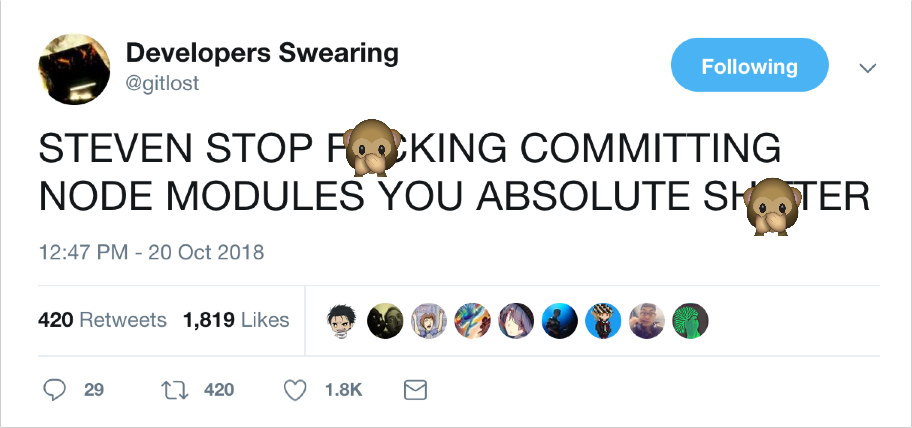

Before we get started...
- Make sure you have a local Git installation (https://git-scm.com/)
- Pull up your command line tool of choice
- Log into GitHub - or make an account
- Join us on Slack - ask a volunteer how.
About Me
- After dropping out of college and (re)teaching myself to code, I spent 4 years in Web Development, primarily Front End Development
- I love thinking about UX, web animations, and anything JavaScript
About Me
- Now: UI/UX Engineering Manager at Creative Market
- Director of Women Who Code DFW
- Full time student at WGU College of Engineering, B.S. Software Development
Connect with Me
- @CareeCodes on Twitter, Instagram, and almost everywhere else.
- http://caree.codes
- blog.caree.codes
- Reach out to me on Slack.


General Advice
- Save and push to your remote branch often
- K.I.S.S. (And consult your rubber duck often4)
- Google stuff if you need to, and ask for help
- Collaboration
- Source of truth and record
- Maintaining multiple versions of the same software
git add .
You have to add your changes to staging before you can commit.
You must include a commit message when commiting changes.
To ask questions

To celebrate project milestones
To give a colleague constructive feedback
You have to commit your changes before you can push.

git checkout -b new-branch-name
-
Additional Learning Resources:
- GitHub for Noobs (Youtube Course)
- Getting Git Right (Atlassian)
- Git documentation